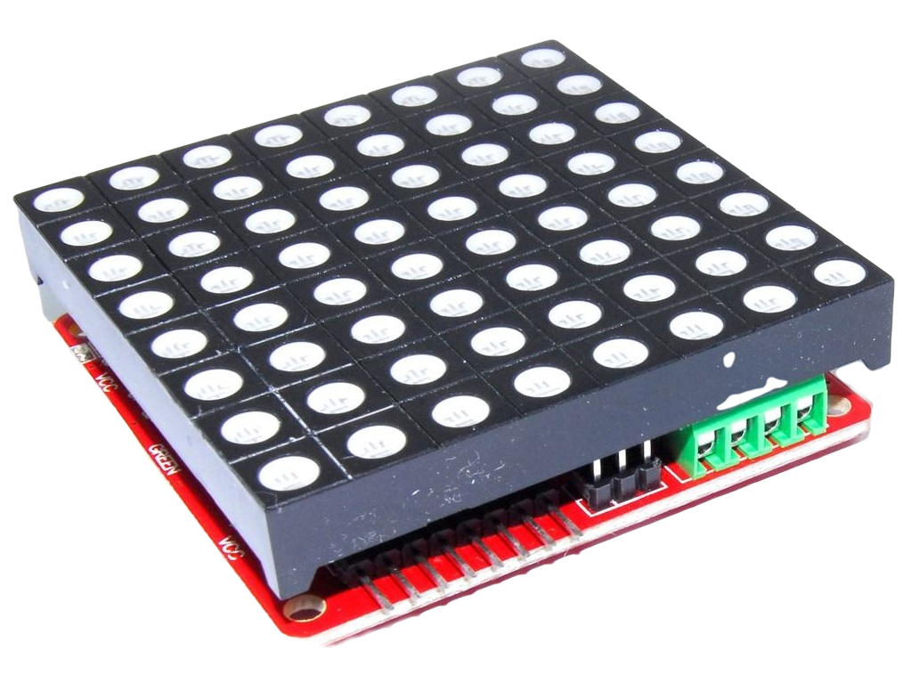
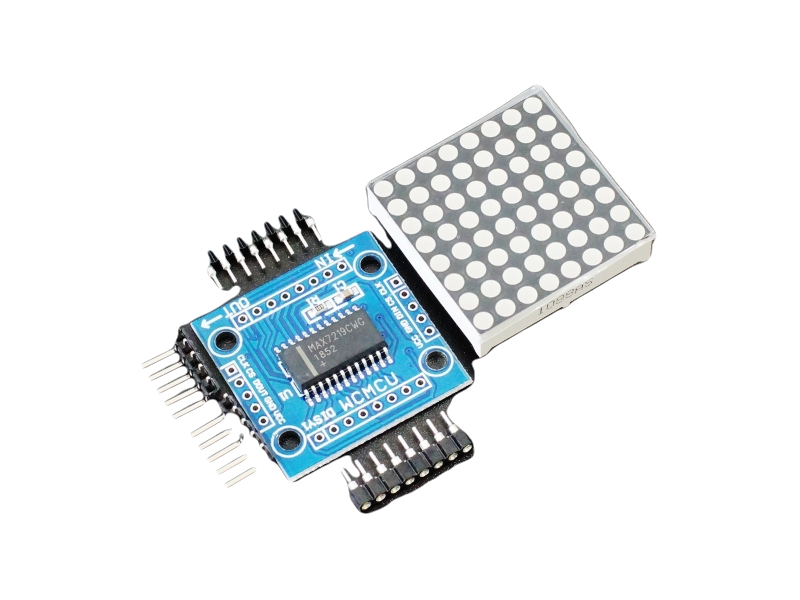
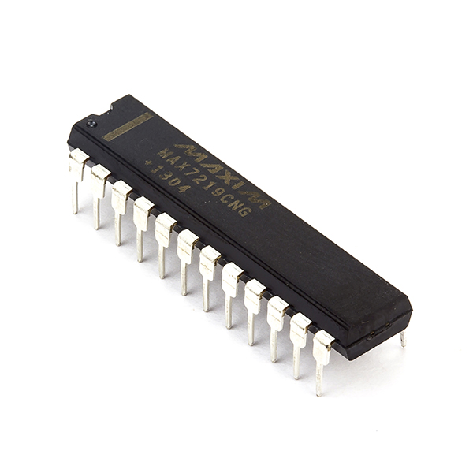
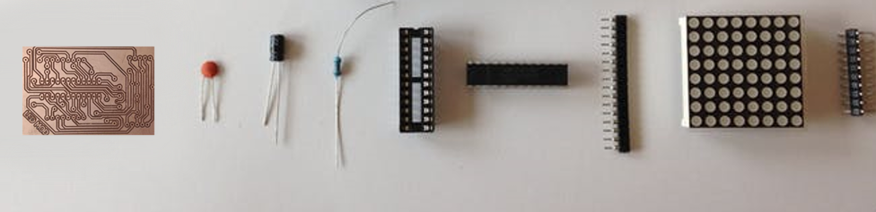

Home
Project Introduction
Project Execution Plan
Detail of Components
Project Design
Principle Working
Challenges
Project Materials
Conclusion
Ethical Aspects
Detail of Components |
Detail of Components |
Led matrix is a dot matrix of large display, low resolution value and is useful for both industrial or commercial displays as well as for human interface machines. Basically the concept of pixels emerges from led matrix. It contains a 2-D diode matrix which have the cathode joined in rows and anode in columns. In this led matrix each can be control individually by controlling the electricity through each pair of columns or rows diodes. These matrix are very popular matrix by means of displaying information it, allows the static and animated images and text. |
 |
Types of led matrix:-There are different types of led matrix used for different commercial and industrial purposes. i-e But here we will discuss about 8*8 dot matrix. |
 |
8*8 dot matrix:-As we know that led has two terminals cathode and anode.so 8*8 led matrix has total of 128 pins but it is arranged in such a way that the pin reduced to 16 pins overall. For making 8*8 dot matrix all the anodes are connecting together in rows R1 to R8, similarly the cathodes are connected together in columns C1 to C8, by doing this, the required number of I/O pins reduces to 16 which is easy to use and connect . |
Max7219 Module: -This module is an integration of matrix driver IC (MAX7219) and 8*8 led matrix. They both are integrated on PCB. This module is then connected to microcontroller to drive the led accordingly. This module has five input and five output pins. Input pins include VCC, ground, Data in, Chip select, and clock while output pin include VCC, ground, Data out, Chip select, and clock. In this module one resistor of 62KΩ is used and some capacitors of range (1 -10 µF) is used. Main purpose of the resistor used is to control current to the module while capacitor is used to reduce the noise of signal from microcontroller to the Max7219 Module. |
 |
Led Driver IC (MAX7219CNG):-The MAX7219CNG is a compact, serial input/output common-cathode display driver that can interface microprocessors to 7-segment numeric LED displays of up to 8 digits, bar-graph displays, or 64 individual LEDs. Included on-chip are a BCD code-B decoder, multiplex scan circuitry, segment and digit drivers, and an 8x8 static RAM that stores each digit. This IC is 24 pin IC, 12 on each side. 16 pin is used for connecting it to the matrix. 2 pin is dedicated to ground and one is dedicated for VCC. Data from microcontroller is entered to the MAX7219 through DIN pin while another is connected to shift data from one module to another through DOUT pin. One pin is dedicated for Clock. Pin 24 is for chip select (CS) which determines number of modules connected together while programing of the project. |
 |
Connecting Led matrix with MAX7219CNG:-As we know that the anodes of a led matrix is connected together for each row so making onepin (terminal) and so that for cathode. Common anode is connected to SEGMENTS (A-H) while common cathode is connected to DIG (0-7) of the IC. BELOW table shows the configuration of pins of matrix with the MAX7219CNG. |
|
|
 |
MICROCONTROLLER (Atmega328/p):-The Atmel AVR core combines a rich instruction set with 32 general purpose working registers.All the 32 registers are directly connected to the Arithmetic Logic Unit (ALU), allowing independent registers to be accessed in a single instruction executed in one clock cycle. The ATmega328/P provides the following features:
|
 |
|
The Idle mode stops the CPU while allowing the SRAM, Timer/Counters, SPI port, and interrupt system to continue functioning.
The Power-down mode saves the register contents but freezes the Oscillator, disabling all other chip functions until the next interrupt or hardware reset. In Power-save mode, the asynchronous timer continues to run, allowing the user to maintain a timer base while the rest of the device is sleeping. The ADC Noise Reduction mode stops the CPU and all I/O modules except asynchronous timer and ADC to minimize switching noise during ADC conversions. In Standby mode, the crystal/resonator oscillator is running while the rest of the device is sleeping. This allows very fast start-up combined with low power consumption. In Extended Standby mode, both the main oscillator and the asynchronous timer continue to run. In our project, led matrix we will use only 5 pins of the microcontroller. VCC, Ground, DIN, DOUT and CS. |
|  |